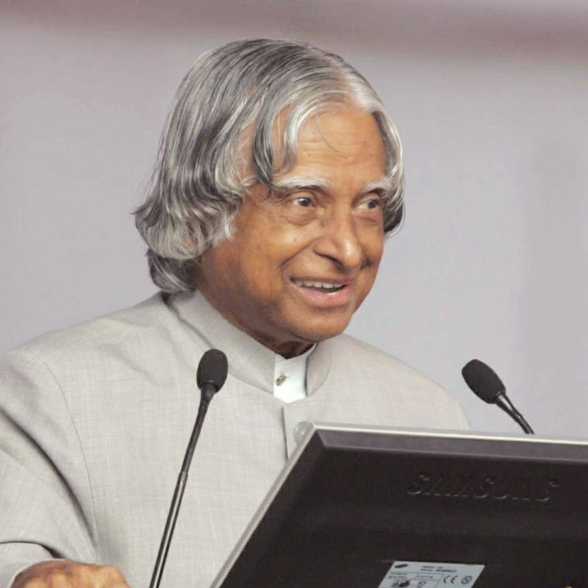

A.P.J. Abdul Kalam
1931 - 2015
Missile Man Of India
Avul Pakir Jainulabdeen Abdul Kalam was an aerospace scientist who joined India's defense department after graduating from the Madras Institute of Technology. He was a central figure in the development of the country's nuclear capabilities and was hailed as a national hero after a series of successful tests in 1998.Kalam was a prominent Indian scientist who served as the 11th President of India from 2002 to 2007. Renowned for his pivotal role in the nation’s civilian space programme and military missile development, he was known as the Missile Man of India.
Quotes
- “Dream is not that which you see while sleeping it is something that does not let you sleep.”
- “It Is Very Easy To Defeat Someone, But It Is Very Hard To Win Someone”
- “Great dreams of great dreamers are always transcended.”
- “Small aim is a crime; have great aim.”
- “To succeed in your mission, you must have single-minded devotion to your goal.”
- “We must think and act like a nation of a billion people and not like that of a million people. Dream, dream, dream!”
- “As a child of God, I am greater than anything that can happen to me.”
- “I was willing to accept what I couldn’t change.”